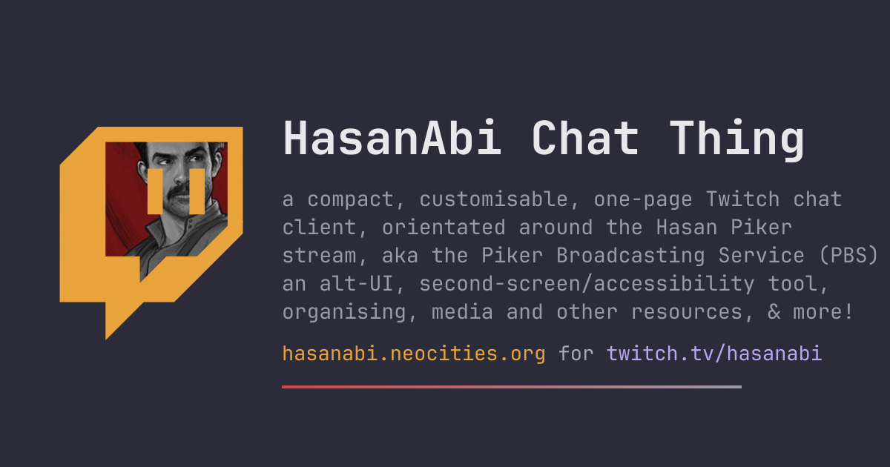
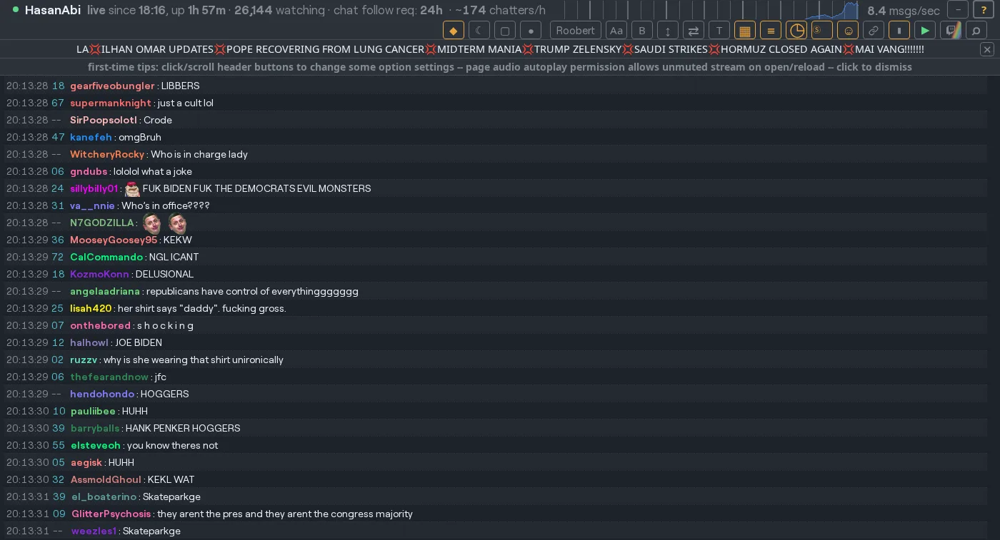
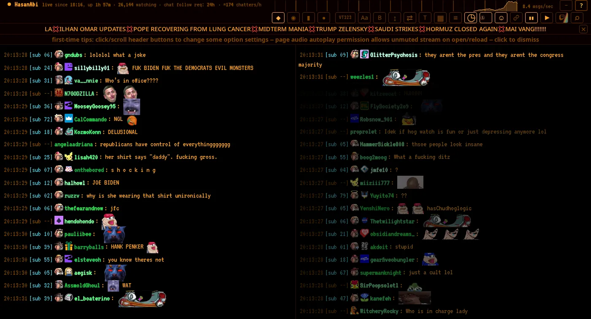
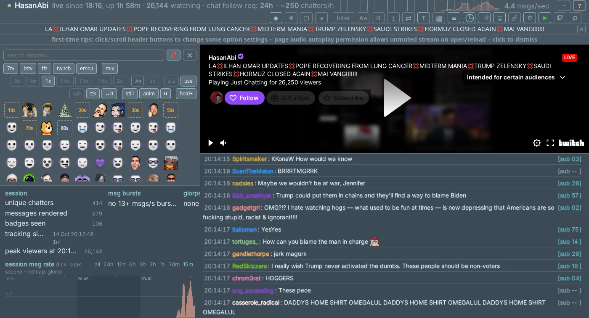
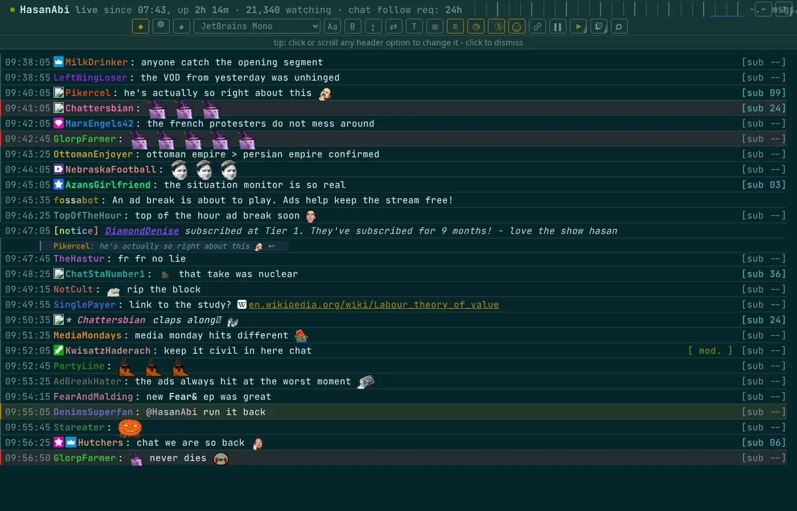
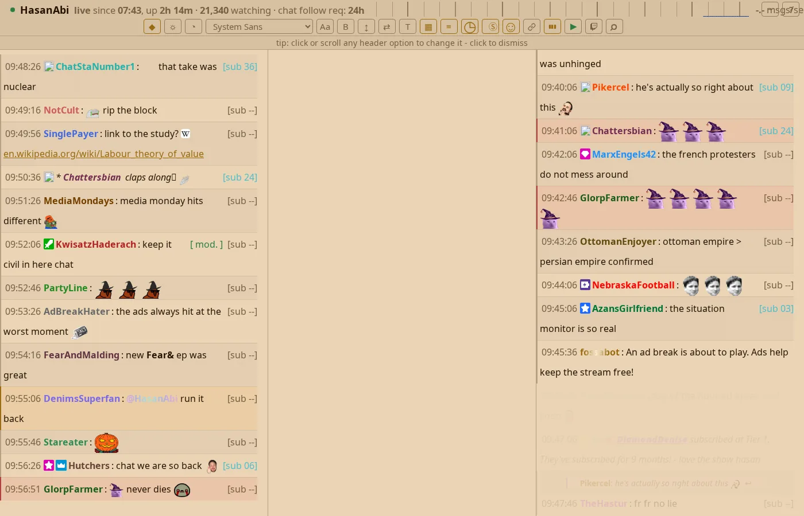
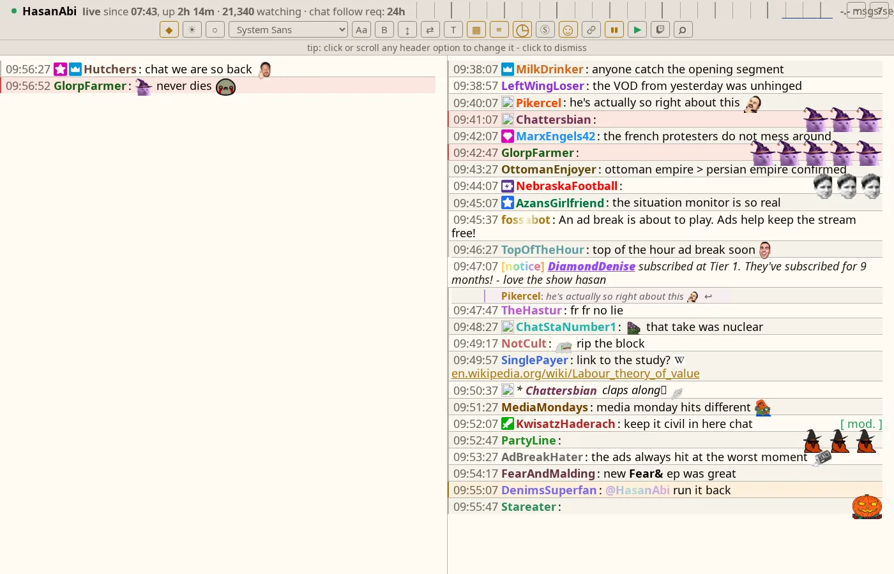
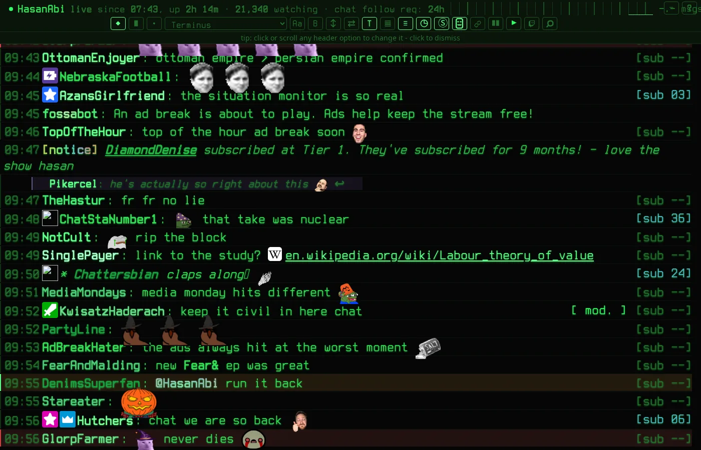
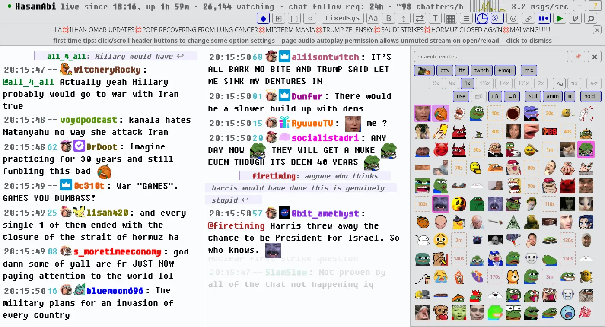

liberates the HasanAbi Twitch chat for use as a second-screen, accessibility, stats, n info hub web tool. no build step, no install (though a PWA), no account needed to watch, settings and logs stored locally, recently missed chat back-filled if possible
open the chat thing →
chat
- the feed
- reading the flow
- page-flip columns & page wrap the layouts below
- reverse flow, msg new line, zebra, separators, timestamp modes
- find bar + archive search user:/kind: filters, 30-day IndexedDB store
- scroll pause on hover, jump-to-live chip, scrollback to 100k
- presence
- send, reply & whisper optional twitch login, input history, drafts
- mention ping + live notification when the page is away
- highlight / block / hide keywords, words, users (vanish, stub or ghost)
- bots on a switch blammobot & fossabot vanish entirely
- marks & mods
- mod actions inline timeouts, bans, /clear - the struck rows ghost
- channel-point highlights glorp/F glows violet, mentions go amber
- ?mid permalinks click a timestamp to copy a link to that line
- gap seams silent stretches get a cause-tagged marker row
extras
- stream & media
- video embed draggable, dockable per layout, or off
- link cards hover previews, titles, tweet cards, yt & insta embeds
- link favicons + clean urls icons lead, chrome-free text
- stats
- msgs/sec sparkline hover reads each second; glorp spikes glow
- top chatters, badges, emotes & links over time windows
- storage audit what the page keeps and where
- the rest
- emote picker searchable grid, usage sort, age marks, zoom
- user cards pronouns, history, mod quick-actions
- shareable settings url every option is a param; theme slots & copy-settings
- update notice a reload bar when a new build lands
- the chrome
- title ticker the stream's title runs under the header
- status line live since, uptime, viewers, chat-mode requirements
- msgs/sec meter a live rate plus sparkline in the header
- pull-to-refresh drag the header down to reload
themes

default
phosphor
midnight
solar
cosy
print
retro
irclayouts
2col
2x2
3col
resources
- inside the page
- resources tab re Hasan, news, live tv, usa pol, organising, mutual aid
- libre tab free software, free culture, open data
- authors tab era-grouped reading lists, links to the source texts
- accessibility
- palettes × shade axis the themes above
- dyslexia fonts, weight, spacing & tracking controls
- screen-reader live region, reduced motion honoured
alt twitch chat
| client | runs on | 3rd-party emotes | send | watch | multi-chan | foss | kind | pitch |
|---|---|---|---|---|---|---|---|---|
| this page | web | 7tv·bttv·ffz | yes | embed | merge | agpl | all-in-one | 14 layouts, stats, resources & reading lists baked in |
| chatterino | win·lin·mac | 7tv·bttv·ffz | yes | no | splits | gpl | the standard | splits for multi-channel |
| chatterino7 | win·lin·mac | 7tv·bttv·ffz | yes | no | splits | gpl | fork | chatterino + the 7tv paints |
| chatty | win·lin·mac | 7tv·bttv·ffz | yes | no | tabs | gpl | chat | java, built for moderating many rooms |
| chatsen | ios·android | 7tv·bttv·ffz | yes | no | tabs | gpl | chat-first | badge library |
| frosty | ios·android | 7tv·bttv·ffz | yes | yes | no | gpl | full client | browse, watch, chat |
| dankchat | android | 7tv·bttv·ffz | yes | no | tabs | gpl | chat only | many rooms |
| xtra | android | 7tv·bttv·ffz | yes | yes | no | yes | full client | vod downloads |
| jchat | web | 7tv·bttv·ffz | no | no | no | no | overlay | obs browser-source |
| kapchat | web | bttv·ffz | no | no | no | no | overlay | nightdev's classic |
| raftchat | web | 7tv·bttv·ffz | no | no | grid | no | chat grid | many rooms side by side |
| twitch-tui | terminal | names only | yes | no | no | gpl | terminal | rust tui |
| any irc client | anything | names only | yes | no | buffers | gpl | irc | hexchat·weechat·irssi over irc.chat.twitch.tv |
| smarttv client | tv | shows them | - | yes | no | yes | tv | tizen + android tv |
| s0undtv | tv | shows them | - | yes | no | yes | tv | android tv |
| twitch app | ios·android·tv·consoles | twitch only | yes | yes | no | no | official | the default experience |
| twitch popout | web | twitch only | yes | no | no | no | official | the bare chat |
multi-chan: merge = rooms in one feed · splits/tabs/grid = side by side · foss: license or public source
backend
Neocities ships a strict CSP (
connect-src 'self'), so no WebSocket to Twitch
IRC is possible. the page embeds a hidden iframe relay hosted on GitHub Pages (no CSP) and talks
postMessage to it: the frontend owns all presentation, the relay owns every outbound
connection. a Cloudflare worker, linkpeek, scrapes og/twitter/JSON-LD/oEmbed metadata
for link cards and stats titles.→ twitch-chat-relay: the relay
& worker source